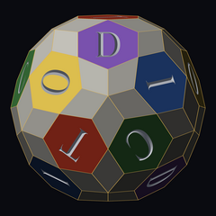
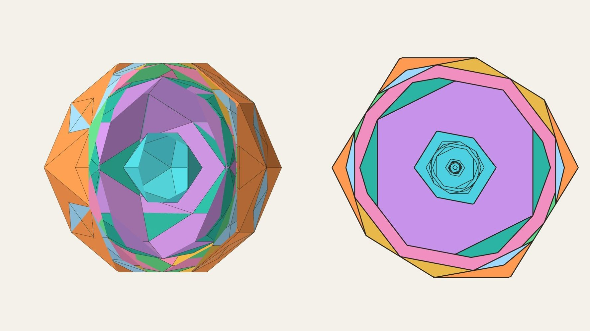
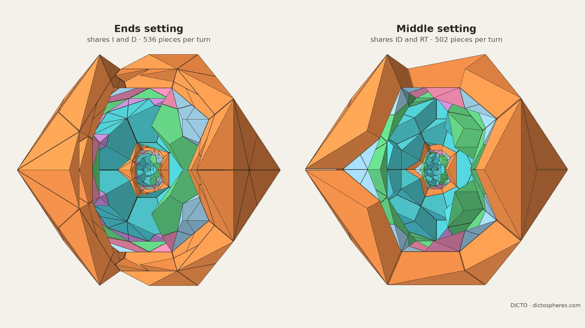
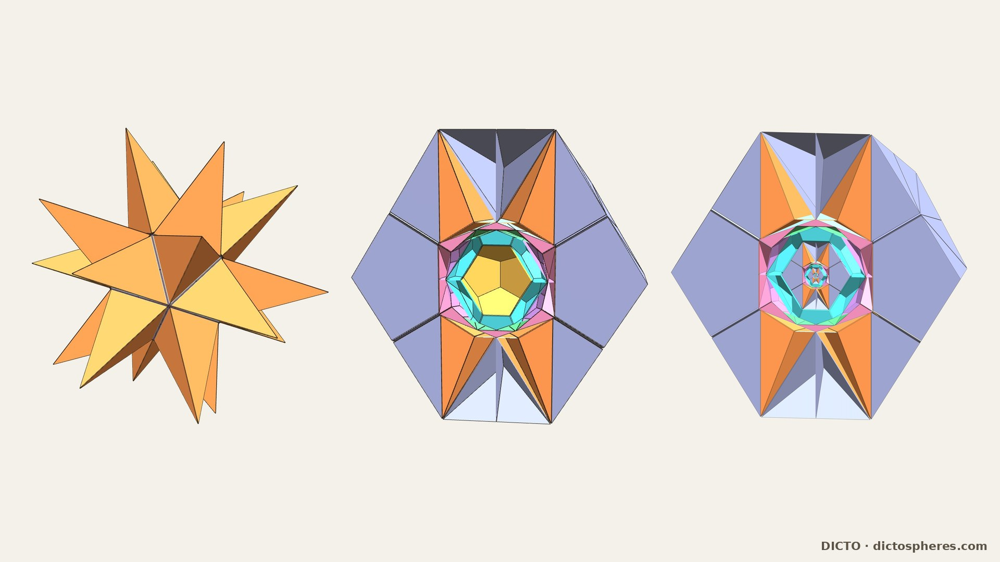

DICTO
D·I·C·T·O — Dodecahedron, Icosahedron, Cube, Tetrahedron, Octahedron
Geometric sculptor in Osaka using recycled PET
Modular systems: B1NR / DICTOspheres
Three apps: the pieces of space
POLYHEDRAVERSE The pieces, one at a time, up close RHOMBIVERSE How pieces fill space, from 1D to 6D KALEIDOHEDRA Space in motion: whole lattices shear and slide, every piece with them New here? Try RHOMBIS, the 3D puzzle from RhombiversePapers
Short papers by DICTO, with the checks behind every claim.
 Book HexOct: The Hexagonality LawFifteen papers in one book, from DICTO's PET-bottle-cap DICTOspheres to spin ice and the two HexOct tiles. However layers of equal balls are stacked, the space is shared out into finitely many kinds of piece, borrowed whole or in half from the cubic and the hexagonal stackings; pieces change only by swapping; every count is a straight line in the share of hexagonal layers. Then the law in real materials, from hydrogen in titanium to battery cathodes, ice, diamond, nanowires and magnets. Last, HexOct: every stacking is a string of just two tiles, and keyed tiles, HexOct-K, can compute. Second edition, Version 6: 92 pages with 13 plates, an index and the HexOct square on the cover.DICTO DOI10.5281/zenodo.23731359Read the bookView in app
Book HexOct: The Hexagonality LawFifteen papers in one book, from DICTO's PET-bottle-cap DICTOspheres to spin ice and the two HexOct tiles. However layers of equal balls are stacked, the space is shared out into finitely many kinds of piece, borrowed whole or in half from the cubic and the hexagonal stackings; pieces change only by swapping; every count is a straight line in the share of hexagonal layers. Then the law in real materials, from hydrogen in titanium to battery cathodes, ice, diamond, nanowires and magnets. Last, HexOct: every stacking is a string of just two tiles, and keyed tiles, HexOct-K, can compute. Second edition, Version 6: 92 pages with 13 plates, an index and the HexOct square on the cover.DICTO DOI10.5281/zenodo.23731359Read the bookView in app Book Quanta of Space: A ManifestoDICTO's manifesto and the overview of the whole work: is space shared out into pieces, and which? Every paper as a short entry in six chapters, with the rule of halves at the centre, and the catalogue of all the atoms: every named shape with its D-number, each drawn alone. 153 pages.DICTO DOI10.5281/zenodo.23754454Read the book
Book Quanta of Space: A ManifestoDICTO's manifesto and the overview of the whole work: is space shared out into pieces, and which? Every paper as a short entry in six chapters, with the rule of halves at the centre, and the catalogue of all the atoms: every named shape with its D-number, each drawn alone. 153 pages.DICTO DOI10.5281/zenodo.23754454Read the book Book Alicia in Wonderland: The Red & White QueensTwo regular solids of four-dimensional space, seen by their shadows and slices: the 600-cell, the White Queen, and its polar partner the 120-cell, the Red Queen, with the work that led to them, from Alicia Boole Stott's slices of 1900 to DICTO's radial cell projection. Aristotle's five pyramids turn out to be the cores of the four-dimensional solids. Version 3: 117 pages with 43 full-page plates.DICTO DOI10.5281/zenodo.23753305Read the bookView in app
Book Alicia in Wonderland: The Red & White QueensTwo regular solids of four-dimensional space, seen by their shadows and slices: the 600-cell, the White Queen, and its polar partner the 120-cell, the Red Queen, with the work that led to them, from Alicia Boole Stott's slices of 1900 to DICTO's radial cell projection. Aristotle's five pyramids turn out to be the cores of the four-dimensional solids. Version 3: 117 pages with 43 full-page plates.DICTO DOI10.5281/zenodo.23753305Read the bookView in app Book The Golden Cycle: Icosahedral ShellsThirteen papers on icosahedral shells, from the Chain of Karma to the gnomon: the icosahedron and the dodecahedron each fill exactly as a shell round the other, the shells alternate without end and grow by φ³ each turn; six solids nest in a cycle, turned inside out it gives a second cycle, and the full turn of twelve stations is a gnomon. 116 pages, with a table of the cycles and an index.DICTO DOI10.5281/zenodo.23752452Read the book
Book The Golden Cycle: Icosahedral ShellsThirteen papers on icosahedral shells, from the Chain of Karma to the gnomon: the icosahedron and the dodecahedron each fill exactly as a shell round the other, the shells alternate without end and grow by φ³ each turn; six solids nest in a cycle, turned inside out it gives a second cycle, and the full turn of twelve stations is a gnomon. 116 pages, with a table of the cycles and an index.DICTO DOI10.5281/zenodo.23752452Read the book #65 The Red Queen 120-cellThe polar of the White Queen, built exactly from her: 120 dodecahedra in nine layers round one, 1, 12, 20, 12, 30, 12, 20, 12, 1, the same forwards and backwards. Its core is the dodecahedron cut into twelve pentagonal pyramids. Proved: all five of Aristotle's pyramids are the cores of the regular four-dimensional solids seen in perspective, with exactly his proportions. With a full exact atlas of 124 slice patterns and four shadows.In the book: Alicia in WonderlandIn the book: Quanta of SpaceDICTO DOI10.5281/zenodo.23716140Read paper
#65 The Red Queen 120-cellThe polar of the White Queen, built exactly from her: 120 dodecahedra in nine layers round one, 1, 12, 20, 12, 30, 12, 20, 12, 1, the same forwards and backwards. Its core is the dodecahedron cut into twelve pentagonal pyramids. Proved: all five of Aristotle's pyramids are the cores of the regular four-dimensional solids seen in perspective, with exactly his proportions. With a full exact atlas of 124 slice patterns and four shadows.In the book: Alicia in WonderlandIn the book: Quanta of SpaceDICTO DOI10.5281/zenodo.23716140Read paper #35 VajrayanaA companion to Progenitors. The dodecahedron returns inside the golden cycle as the hull of DICTO's Cleo star, filled exactly by 82 pieces of four kinds. The last loose step, from the rhombic triacontahedron to the next icosahedron, is closed by a new solid that touches both, the DICTO Metaxyhexecontahedron, each of its two layers one kind of piece. The cycle grows to twelve stations. Exact in every step.In the book: The Golden CycleIn the book: Quanta of SpaceDICTO DOI10.5281/zenodo.23429911Read paperView in app
#35 VajrayanaA companion to Progenitors. The dodecahedron returns inside the golden cycle as the hull of DICTO's Cleo star, filled exactly by 82 pieces of four kinds. The last loose step, from the rhombic triacontahedron to the next icosahedron, is closed by a new solid that touches both, the DICTO Metaxyhexecontahedron, each of its two layers one kind of piece. The cycle grows to twelve stations. Exact in every step.In the book: The Golden CycleIn the book: Quanta of SpaceDICTO DOI10.5281/zenodo.23429911Read paperView in app #80 The Gains of DICTO's Growth RuleDICTO's growth rule T puts a face through every corner of a solid; run again and again, it carries some solids back to their own shape, larger, by a factor, the chain's gain. DICTO noticed that the four-step factors of his star chains in #78, 4.944 and 11.542, come close to 5 and 12, and proposed that such factors might form a new series of ratios; we find every gain exactly, among the Platonic, Archimedean and Catalan solids and ten of DICTO's solids, which explains DICTO's near-misses exactly.DICTO DOI10.5281/zenodo.23822907Read paper
#80 The Gains of DICTO's Growth RuleDICTO's growth rule T puts a face through every corner of a solid; run again and again, it carries some solids back to their own shape, larger, by a factor, the chain's gain. DICTO noticed that the four-step factors of his star chains in #78, 4.944 and 11.542, come close to 5 and 12, and proposed that such factors might form a new series of ratios; we find every gain exactly, among the Platonic, Archimedean and Catalan solids and ten of DICTO's solids, which explains DICTO's near-misses exactly.DICTO DOI10.5281/zenodo.23822907Read paper #79 Star Cores of DICTO's SolidsDICTO proposed giving every one of his new shapes the star core treatment of the TI Star: face pyramids turned outwards and wrapped in a halo. Proved, and checked on the 48 convex shapes of DICTO Solids cut into face pyramids: with each spike's tip at the pole of its face plane, the halo is the solid's polar and the layer between star and halo is tiled exactly by one pyramid over each corner and one tetrahedron over each edge, for every convex solid with its centre inside.DICTO DOI10.5281/zenodo.23822905Read paper
#79 Star Cores of DICTO's SolidsDICTO proposed giving every one of his new shapes the star core treatment of the TI Star: face pyramids turned outwards and wrapped in a halo. Proved, and checked on the 48 convex shapes of DICTO Solids cut into face pyramids: with each spike's tip at the pole of its face plane, the halo is the solid's polar and the layer between star and halo is tiled exactly by one pyramid over each corner and one tetrahedron over each edge, for every convex solid with its centre inside.DICTO DOI10.5281/zenodo.23822905Read paper #78 The Truncated Icosahedron Star (TI Star)DICTO's idea: fill the truncated icosahedron's core with its own pyramids and turn them outwards. Cut from its centre, the truncated icosahedron (TI) is exactly 12 pentagonal and 20 hexagonal pyramids; turned outwards they give the TI Star. Proved: with each spike the mirror image of its pyramid, or 1/φ of its height, TI, the TI Star, the hull of the 32 tips and TI scaled up form one turn of an endless cycle, each layer filled exactly by tetrahedra of three kinds: a doubling cycle, the TI Star twice the volume of TI, and a golden cycle, one turn φ³ in volume. The hull of the tips, the Star Halo, starts a star chain that returns to the shape of TI after four steps.In the book: The Golden CycleIn the book: Quanta of SpaceDICTO DOI10.5281/zenodo.23782577Read paper
#78 The Truncated Icosahedron Star (TI Star)DICTO's idea: fill the truncated icosahedron's core with its own pyramids and turn them outwards. Cut from its centre, the truncated icosahedron (TI) is exactly 12 pentagonal and 20 hexagonal pyramids; turned outwards they give the TI Star. Proved: with each spike the mirror image of its pyramid, or 1/φ of its height, TI, the TI Star, the hull of the 32 tips and TI scaled up form one turn of an endless cycle, each layer filled exactly by tetrahedra of three kinds: a doubling cycle, the TI Star twice the volume of TI, and a golden cycle, one turn φ³ in volume. The hull of the tips, the Star Halo, starts a star chain that returns to the shape of TI after four steps.In the book: The Golden CycleIn the book: Quanta of SpaceDICTO DOI10.5281/zenodo.23782577Read paper #77 Face to Face: A New Law of Aristotle's PyramidsCut a Platonic solid from its centre to each face and it falls into congruent face pyramids. DICTO proposed the face-to-face case. Proved: in every face-to-face tiling of space by face pyramids, the pyramids round each apex make up their whole solid, so the tiling is the cubic tiling or a tiling by regular tetrahedra and octahedra, such as the octet. The dodecahedron's pyramid and the Cleo-Icos occur in no such tiling. The proof needs no computer. A search of 5,143,972 face-to-face clusters of DICTO's pieces gives only two solids with equilateral faces, the regular tetrahedron and the pentagonal bipyramid J13, neither new.In the book: Alicia in WonderlandIn the book: Quanta of SpaceDICTO DOI10.5281/zenodo.23779962Read paperView in app
#77 Face to Face: A New Law of Aristotle's PyramidsCut a Platonic solid from its centre to each face and it falls into congruent face pyramids. DICTO proposed the face-to-face case. Proved: in every face-to-face tiling of space by face pyramids, the pyramids round each apex make up their whole solid, so the tiling is the cubic tiling or a tiling by regular tetrahedra and octahedra, such as the octet. The dodecahedron's pyramid and the Cleo-Icos occur in no such tiling. The proof needs no computer. A search of 5,143,972 face-to-face clusters of DICTO's pieces gives only two solids with equilateral faces, the regular tetrahedron and the pentagonal bipyramid J13, neither new.In the book: Alicia in WonderlandIn the book: Quanta of SpaceDICTO DOI10.5281/zenodo.23779962Read paperView in app #76 Between the QueensDICTO proposed the stages that lead from one queen to the other. Cut the White Queen's corners deeper and deeper and she passes through five uniform four-dimensional solids before she becomes the Red Queen; at the midpoint, the bitruncated 600-cell, whose cells are 120 truncated icosahedra and 600 truncated tetrahedra. All seven are classical, first listed by Alicia Boole Stott in 1910. Each stage is built from the White Queen's own corners, edges, triangles and cells, with the cut positions that make every edge equal, and a complete atlas of 1402 slices and 20 shadows in the queens' four directions.In the book: Alicia in WonderlandIn the book: Quanta of SpaceDICTO DOI10.5281/zenodo.23780068Read paperView in app
#76 Between the QueensDICTO proposed the stages that lead from one queen to the other. Cut the White Queen's corners deeper and deeper and she passes through five uniform four-dimensional solids before she becomes the Red Queen; at the midpoint, the bitruncated 600-cell, whose cells are 120 truncated icosahedra and 600 truncated tetrahedra. All seven are classical, first listed by Alicia Boole Stott in 1910. Each stage is built from the White Queen's own corners, edges, triangles and cells, with the cut positions that make every edge equal, and a complete atlas of 1402 slices and 20 shadows in the queens' four directions.In the book: Alicia in WonderlandIn the book: Quanta of SpaceDICTO DOI10.5281/zenodo.23780068Read paperView in app #75 HexOct: Two Tiles for Every StackingDICTO's idea, proved exactly: every close-packed stacking is a string of just two layer tiles, HexOct, a cubic one and a hexagonal one, each one rigid unit of four pieces. Any tile sits on any tile; they meet on flat planes up to one weight and interlock beyond it, like building bricks. With keys, HexOct-K, each layer is one step of a cellular automaton, so a stack can compute.In the book: HexOctIn the book: Quanta of SpaceDICTO DOI10.5281/zenodo.23737639Read paper
#75 HexOct: Two Tiles for Every StackingDICTO's idea, proved exactly: every close-packed stacking is a string of just two layer tiles, HexOct, a cubic one and a hexagonal one, each one rigid unit of four pieces. Any tile sits on any tile; they meet on flat planes up to one weight and interlock beyond it, like building bricks. With keys, HexOct-K, each layer is one step of a cellular automaton, so a stack can compute.In the book: HexOctIn the book: Quanta of SpaceDICTO DOI10.5281/zenodo.23737639Read paper #74 Spin Ice and Kagome Magnets on Every StackingThe pyrochlore network of spin ice keeps the same closed loops on every stacking, computed to 34 bonds, so its frozen-in entropy does not depend on the stacking. In the kagome magnets each manganese atom lies on 1 + 3(1 − h) kagome planes: four in cubic Mn3Ir, one in hexagonal Mn3Sn.In the book: HexOctIn the book: Quanta of SpaceDICTO DOI10.5281/zenodo.23730421Read paperView in app
#74 Spin Ice and Kagome Magnets on Every StackingThe pyrochlore network of spin ice keeps the same closed loops on every stacking, computed to 34 bonds, so its frozen-in entropy does not depend on the stacking. In the kagome magnets each manganese atom lies on 1 + 3(1 − h) kagome planes: four in cubic Mn3Ir, one in hexagonal Mn3Sn.In the book: HexOctIn the book: Quanta of SpaceDICTO DOI10.5281/zenodo.23730421Read paperView in app #73 The Hexagonality Law in Real Materials VIce, diamond and nanowires. In every stacking of a tetrahedral network the eclipsed bonds number h/2 per atom. Band offsets of nanowire semiconductors lie on the law line within 4%; the energies rank tin, germanium, diamond, silicon and silicon carbide by their distance from the law; for cloud ice the law predicts heat and vapour pressure in proportion to cubicity.In the book: HexOctIn the book: Quanta of SpaceDICTO DOI10.5281/zenodo.23728921Read paperView in app
#73 The Hexagonality Law in Real Materials VIce, diamond and nanowires. In every stacking of a tetrahedral network the eclipsed bonds number h/2 per atom. Band offsets of nanowire semiconductors lie on the law line within 4%; the energies rank tin, germanium, diamond, silicon and silicon carbide by their distance from the law; for cloud ice the law predicts heat and vapour pressure in proportion to cubicity.In the book: HexOctIn the book: Quanta of SpaceDICTO DOI10.5281/zenodo.23728921Read paperView in app #72 The Hexagonality Law in Real Materials IVOxides: hexagonal perovskites and battery cathodes. Pauling's third rule and the tolerance factor become one count, 2h shared faces. BaRuO3 volumes lie on the law line and pressure walks them down; charged LiCoO2 keeps its lithium only where it shares no face.In the book: HexOctIn the book: Quanta of SpaceDICTO DOI10.5281/zenodo.23728287Read paperView in app
#72 The Hexagonality Law in Real Materials IVOxides: hexagonal perovskites and battery cathodes. Pauling's third rule and the tolerance factor become one count, 2h shared faces. BaRuO3 volumes lie on the law line and pressure walks them down; charged LiCoO2 keeps its lithium only where it shares no face.In the book: HexOctIn the book: Quanta of SpaceDICTO DOI10.5281/zenodo.23728287Read paperView in app #71 The Hexagonality Law in Real Materials IIIAlloys and hydrogen. The places hydrogen can sit in a metal follow the law exactly, so the brittle hydrides of titanium and zirconium need fully cubic layers. Magnesium LPSO alloys follow the law layer by layer; cobalt and iron come close; the high-entropy alloy CrCoNi departs.In the book: HexOctIn the book: Quanta of SpaceDICTO DOI10.5281/zenodo.23726064Read paperView in app
#71 The Hexagonality Law in Real Materials IIIAlloys and hydrogen. The places hydrogen can sit in a metal follow the law exactly, so the brittle hydrides of titanium and zirconium need fully cubic layers. Magnesium LPSO alloys follow the law layer by layer; cobalt and iron come close; the high-entropy alloy CrCoNi departs.In the book: HexOctIn the book: Quanta of SpaceDICTO DOI10.5281/zenodo.23726064Read paperView in app #70 The Hexagonality Law in Real Materials IIEntropy and pressure. The stacking entropy of hard spheres is about 90% of the law's form at close packing. Under pressure, a volume of the law's form could only tilt cubic against hexagonal; silicon carbide is pushed toward cubic, as experiments find, while silicon and germanium tilt the other way.In the book: HexOctIn the book: Quanta of SpaceDICTO DOI10.5281/zenodo.23723565Read paperView in app
#70 The Hexagonality Law in Real Materials IIEntropy and pressure. The stacking entropy of hard spheres is about 90% of the law's form at close packing. Under pressure, a volume of the law's form could only tilt cubic against hexagonal; silicon carbide is pushed toward cubic, as experiments find, while silicon and germanium tilt the other way.In the book: HexOctIn the book: Quanta of SpaceDICTO DOI10.5281/zenodo.23723565Read paperView in app #69 The Hexagonality Law and the Fibonacci StackingA never-repeating crystal in the Fibonacci order: its hexagonal layers make up exactly 1/φ² and never touch, and its pieces come in golden proportions. By the Hexagonality Law the golden ratio then enters every piece volume exactly. One kit of pieces from the two repeating stackings builds the never-repeating one.In the book: HexOctIn the book: Quanta of SpaceDICTO DOI10.5281/zenodo.23721038Read paper
#69 The Hexagonality Law and the Fibonacci StackingA never-repeating crystal in the Fibonacci order: its hexagonal layers make up exactly 1/φ² and never touch, and its pieces come in golden proportions. By the Hexagonality Law the golden ratio then enters every piece volume exactly. One kit of pieces from the two repeating stackings builds the never-repeating one.In the book: HexOctIn the book: Quanta of SpaceDICTO DOI10.5281/zenodo.23721038Read paper #68 Real Polytypes and the Hexagonality LawThe law tested on real crystals. Silicon carbide follows the straight line within its data; silicon and germanium bend by only about 0.04%, a small relaxation that ideal geometry does not have; germanium's stacking faults come close to the ideal 2 : 2 : 1. In the physicists' layer model the law means exactly: no coupling beyond the nearest layer.In the book: HexOctIn the book: Quanta of SpaceDICTO DOI10.5281/zenodo.23719275Read paperView in app
#68 Real Polytypes and the Hexagonality LawThe law tested on real crystals. Silicon carbide follows the straight line within its data; silicon and germanium bend by only about 0.04%, a small relaxation that ideal geometry does not have; germanium's stacking faults come close to the ideal 2 : 2 : 1. In the physicists' layer model the law means exactly: no coupling beyond the nearest layer.In the book: HexOctIn the book: Quanta of SpaceDICTO DOI10.5281/zenodo.23719275Read paperView in app #67 Random Stackings and Stacking FaultsThe Hexagonality Law at work. However the layers of a crystal are stacked, even at random, every kind of piece averages exactly its pure share, fixed by one measured number, the share of hexagonal layers, as in randomly stacked colloids and stacking-disordered ice. Every stacking fault moves space by whole layer shares: 1, 2 and 2 in cubic crystals, 1, 2 and 3 in hexagonal ones.In the book: HexOctIn the book: Quanta of SpaceDICTO DOI10.5281/zenodo.23718636Read paper
#67 Random Stackings and Stacking FaultsThe Hexagonality Law at work. However the layers of a crystal are stacked, even at random, every kind of piece averages exactly its pure share, fixed by one measured number, the share of hexagonal layers, as in randomly stacked colloids and stacking-disordered ice. Every stacking fault moves space by whole layer shares: 1, 2 and 2 in cubic crystals, 1, 2 and 3 in hexagonal ones.In the book: HexOctIn the book: Quanta of SpaceDICTO DOI10.5281/zenodo.23718636Read paper #66 The FocusDICTO's conclusion that everything is the same study, set out as one map of how the recent papers meet. Its theorem, the Hexagonality Law: however the layers of a crystal are stacked, each layer holds exactly what it holds in its own pure stacking, so every kind of piece totals a straight line in the share of hexagonal layers. Exact in every crystal family computed.In the book: HexOctIn the book: Quanta of SpaceDICTO DOI10.5281/zenodo.23717687Read paperView in app
#66 The FocusDICTO's conclusion that everything is the same study, set out as one map of how the recent papers meet. Its theorem, the Hexagonality Law: however the layers of a crystal are stacked, each layer holds exactly what it holds in its own pure stacking, so every kind of piece totals a straight line in the share of hexagonal layers. Exact in every crystal family computed.In the book: HexOctIn the book: Quanta of SpaceDICTO DOI10.5281/zenodo.23717687Read paperView in app #64 The Swap Rule in CrystalsMany crystals come in a cubic and a hexagonal form and many stackings between. Here the Swap Rule holds in rock salt, cadmium iodide, zinc blende and the Laves phases, in all 299 cases where it can be tested: the two mixed pieces always add up to the two pure ones.In the book: HexOctIn the book: Quanta of SpaceDICTO DOI10.5281/zenodo.23709753Read paper
#64 The Swap Rule in CrystalsMany crystals come in a cubic and a hexagonal form and many stackings between. Here the Swap Rule holds in rock salt, cadmium iodide, zinc blende and the Laves phases, in all 299 cases where it can be tested: the two mixed pieces always add up to the two pure ones.In the book: HexOctIn the book: Quanta of SpaceDICTO DOI10.5281/zenodo.23709753Read paper #63 The White Queen 600-cellAn exact atlas of every slice and shadow of the 600-cell: 62 slice patterns, twelve all triangles, every four-sided face explained. Each shadow resolves into two exact halves. Round one vertex its 600 cells stand in fifteen shells, each of one kind of piece, round a core of twenty Cleo-Icos filling an icosahedron. Its most graceful slice is Humpty Dumpty, the 48-vertex egg.In the book: Alicia in WonderlandIn the book: Quanta of SpaceDICTO DOI10.5281/zenodo.23690856Read paperView in app
#63 The White Queen 600-cellAn exact atlas of every slice and shadow of the 600-cell: 62 slice patterns, twelve all triangles, every four-sided face explained. Each shadow resolves into two exact halves. Round one vertex its 600 cells stand in fifteen shells, each of one kind of piece, round a core of twenty Cleo-Icos filling an icosahedron. Its most graceful slice is Humpty Dumpty, the 48-vertex egg.In the book: Alicia in WonderlandIn the book: Quanta of SpaceDICTO DOI10.5281/zenodo.23690856Read paperView in app #62 Shadows of the Fourth DimensionDICTO's idea: the shadows and slices of the four-dimensional solids give new deltahedra. Two are variants of known deltahedra that join differently: one closes three round an edge, the other fills space on its own. Four slices of the 600-cell rebuild exactly with all edges equal, among them Kagemusha (was Shadow-17), two J11 glued together, and Slice-48, 92 equal triangles with tetrahedral symmetry.In the book: Alicia in WonderlandIn the book: Quanta of SpaceDICTO DOI10.5281/zenodo.23687223Read paper
#62 Shadows of the Fourth DimensionDICTO's idea: the shadows and slices of the four-dimensional solids give new deltahedra. Two are variants of known deltahedra that join differently: one closes three round an edge, the other fills space on its own. Four slices of the 600-cell rebuild exactly with all edges equal, among them Kagemusha (was Shadow-17), two J11 glued together, and Slice-48, 92 equal triangles with tetrahedral symmetry.In the book: Alicia in WonderlandIn the book: Quanta of SpaceDICTO DOI10.5281/zenodo.23687223Read paper #61 The Swap RuleSquash the layers of a close-packed stacking and its tetrahedral holes become Janus pieces too: a top from one pure stacking, a bottom from the other. DICTO named them Ganesha. Proved exactly for every stacking: the two mixed pieces always add up to the two pure ones, and true close packing is the exact border.In the book: HexOctIn the book: Quanta of SpaceDICTO DOI10.5281/zenodo.23682596Read paper
#61 The Swap RuleSquash the layers of a close-packed stacking and its tetrahedral holes become Janus pieces too: a top from one pure stacking, a bottom from the other. DICTO named them Ganesha. Proved exactly for every stacking: the two mixed pieces always add up to the two pure ones, and true close packing is the exact border.In the book: HexOctIn the book: Quanta of SpaceDICTO DOI10.5281/zenodo.23682596Read paper #60 DICTO Janus c/h PyrochloreDICTO's idea: the rule of halves of #57 on the pyrochlore network, the corner-sharing tetrahedra hidden in every diamond-like crystal, its layers stacked in any order. Proved exactly: every piece is borrowed from the pure cubic or hexagonal stacking — whole for the tetrahedra, and as Janus c/h halves for the open spaces where cubic meets hexagonal.In the book: HexOctIn the book: Quanta of SpaceDICTO DOI10.5281/zenodo.23678750Read paper
#60 DICTO Janus c/h PyrochloreDICTO's idea: the rule of halves of #57 on the pyrochlore network, the corner-sharing tetrahedra hidden in every diamond-like crystal, its layers stacked in any order. Proved exactly: every piece is borrowed from the pure cubic or hexagonal stacking — whole for the tetrahedra, and as Janus c/h halves for the open spaces where cubic meets hexagonal.In the book: HexOctIn the book: Quanta of SpaceDICTO DOI10.5281/zenodo.23678750Read paper #59 The Icosaxes Hexa: Bloom, Bud and SeedDICTO's idea: the Hexa's move — pieces passing into each other until they close — with icosahedral symmetry. Twenty Icosaxes on a dodecahedron's corners touch as an open bloom with twelve windows, close into a bud at exactly 1/φ of that distance and fill into one solid seed at exactly one third (proved exactly). In the lattice, eight Icosaxes round an Unborn Axes form a network in which every Icosaxes is shared by exactly two blocks.In the book: Quanta of SpaceDICTO DOI10.5281/zenodo.23677485Read paper
#59 The Icosaxes Hexa: Bloom, Bud and SeedDICTO's idea: the Hexa's move — pieces passing into each other until they close — with icosahedral symmetry. Twenty Icosaxes on a dodecahedron's corners touch as an open bloom with twelve windows, close into a bud at exactly 1/φ of that distance and fill into one solid seed at exactly one third (proved exactly). In the lattice, eight Icosaxes round an Unborn Axes form a network in which every Icosaxes is shared by exactly two blocks.In the book: Quanta of SpaceDICTO DOI10.5281/zenodo.23677485Read paper #58 From the Octet to Every Stacking: the Web of BondsThe story of papers #40–#57, from DICTO's PET-bottle-cap DICTOspheres to the rule of halves: however layers of equal balls are stacked, the space is shared out into pieces of only finitely many kinds, each borrowed, whole or in half, from the cubic and the hexagonal stackings. Endless variety of order, from a finite set of quanta.In the book: HexOctIn the book: Quanta of SpaceDICTO DOI10.5281/zenodo.23665944Read paperView in app
#58 From the Octet to Every Stacking: the Web of BondsThe story of papers #40–#57, from DICTO's PET-bottle-cap DICTOspheres to the rule of halves: however layers of equal balls are stacked, the space is shared out into pieces of only finitely many kinds, each borrowed, whole or in half, from the cubic and the hexagonal stackings. Endless variety of order, from a finite set of quanta.In the book: HexOctIn the book: Quanta of SpaceDICTO DOI10.5281/zenodo.23665944Read paperView in app #57 The Rule of HalvesDICTO's idea: follow the web of bonds onto every way of stacking close-packed layers. Proved exactly: each gap's piece comes from the two pure stackings, cubic and hexagonal. A tetrahedral gap takes the piece of its nearest layer; an octahedral gap is a top half and a bottom half, each from the layer on its side. So all stackings share a finite catalogue of pieces, and where a cubic layer meets a hexagonal one appear the Janus c/h pieces, half of each, named by DICTO: Chucky and Fang.In the book: HexOctIn the book: Quanta of SpaceDICTO DOI10.5281/zenodo.23647898Read paperView in app
#57 The Rule of HalvesDICTO's idea: follow the web of bonds onto every way of stacking close-packed layers. Proved exactly: each gap's piece comes from the two pure stackings, cubic and hexagonal. A tetrahedral gap takes the piece of its nearest layer; an octahedral gap is a top half and a bottom half, each from the layer on its side. So all stackings share a finite catalogue of pieces, and where a cubic layer meets a hexagonal one appear the Janus c/h pieces, half of each, named by DICTO: Chucky and Fang.In the book: HexOctIn the book: Quanta of SpaceDICTO DOI10.5281/zenodo.23647898Read paperView in app #56 Sonsam and LahdeliNames by DICTO. Follow the web of bonds on the mirrored (hexagonal) stacking of the octet: it has its own equal-volume pair, Sonsam and Lahdeli, the twins of Samson and Delilah, then a stop the cubic side never makes, Ian Dury with the 60° rhombohedron, and ends in Blockheads where the cubic side ends in cubes. Keys change the pieces but never the web: Sonsam-K, Lahdeli-K, Ian Dury-K, Rhombo-K. And the Sunstar (#42) is rock salt's switch point keyed with Euclid's roofs. Proved exactly.In the book: Quanta of SpaceDICTO DOI10.5281/zenodo.23635823Read paper
#56 Sonsam and LahdeliNames by DICTO. Follow the web of bonds on the mirrored (hexagonal) stacking of the octet: it has its own equal-volume pair, Sonsam and Lahdeli, the twins of Samson and Delilah, then a stop the cubic side never makes, Ian Dury with the 60° rhombohedron, and ends in Blockheads where the cubic side ends in cubes. Keys change the pieces but never the web: Sonsam-K, Lahdeli-K, Ian Dury-K, Rhombo-K. And the Sunstar (#42) is rock salt's switch point keyed with Euclid's roofs. Proved exactly.In the book: Quanta of SpaceDICTO DOI10.5281/zenodo.23635823Read paper #54 One Turn Is a GnomonDICTO's idea: carry the classical gnomon, the piece that makes a figure into a larger copy of itself, into three dimensions through his golden cycle of twelve nested solids. Built exactly, step by step: only the whole turn is a gnomon, the next icosahedron φ³ larger; no single step is. The step pieces are named Julias and Pimentels by DICTO, in tribute to Júlia Pimentel's square method. Also: the polar of the keyed pair.In the book: The Golden CycleIn the book: Quanta of SpaceDICTO DOI10.5281/zenodo.23633365Read paper
#54 One Turn Is a GnomonDICTO's idea: carry the classical gnomon, the piece that makes a figure into a larger copy of itself, into three dimensions through his golden cycle of twelve nested solids. Built exactly, step by step: only the whole turn is a gnomon, the next icosahedron φ³ larger; no single step is. The step pieces are named Julias and Pimentels by DICTO, in tribute to Júlia Pimentel's square method. Also: the polar of the keyed pair.In the book: The Golden CycleIn the book: Quanta of SpaceDICTO DOI10.5281/zenodo.23633365Read paper #55 David and GoliathNames by DICTO. Slide the weight in the A15 alloy structure and at one exact point the space falls into two pieces: Goliath, Jessen's famous icosahedron filled out to a convex solid, and David, a small tetrahedron that touches only Goliaths. It is the classical A15 picture of Frank and Kasper, reached by the global web of bonds (#53); with the octet, rock salt and zinc blende pairs it supports the theorem. Proved exactly.In the book: Quanta of SpaceDICTO DOI10.5281/zenodo.23632358Read paper
#55 David and GoliathNames by DICTO. Slide the weight in the A15 alloy structure and at one exact point the space falls into two pieces: Goliath, Jessen's famous icosahedron filled out to a convex solid, and David, a small tetrahedron that touches only Goliaths. It is the classical A15 picture of Frank and Kasper, reached by the global web of bonds (#53); with the octet, rock salt and zinc blende pairs it supports the theorem. Proved exactly.In the book: Quanta of SpaceDICTO DOI10.5281/zenodo.23632358Read paper #53 The Global Web of BondsDICTO's idea: the DICTONIC hand-overs should show up elsewhere in other networks. Proved for ten classical crystal networks and the perovskite: every weight walk exactly, every switch, and the bonds on every stretch. Both DICTONIC styles recur: a single switch where only unlike bonds remain (the square tiling, the trihexagonal tiling, rock salt's cubes, the octet), and gradual hand-overs elsewhere. And the bond between unlike pieces can never break while both kinds exist.In the book: Quanta of SpaceDICTO DOI10.5281/zenodo.23631140Read paperView in app
#53 The Global Web of BondsDICTO's idea: the DICTONIC hand-overs should show up elsewhere in other networks. Proved for ten classical crystal networks and the perovskite: every weight walk exactly, every switch, and the bonds on every stretch. Both DICTONIC styles recur: a single switch where only unlike bonds remain (the square tiling, the trihexagonal tiling, rock salt's cubes, the octet), and gradual hand-overs elsewhere. And the bond between unlike pieces can never break while both kinds exist.In the book: Quanta of SpaceDICTO DOI10.5281/zenodo.23631140Read paperView in app #52 The Web of BondsDICTO's idea: the network of bonds of the DICTONIC SOLIDS should make a web of lattices that changes with the rhythm of the loop. Proved: both loops are weighted tilings of fixed points, the caesium chloride and fluorite crystal structures, and the web of bonds is their exact dual. The golden bonds hand over gradually, with no switch; the Delian bonds hand over at the octet, the one point where a single kind of bond holds both pieces. Read as atoms, the weights are squared atom sizes, the touching ranges end at Pauling's limits, and real crystals sit on the loops.In the book: Quanta of SpaceDICTO DOI10.5281/zenodo.23629252Read paperView in app
#52 The Web of BondsDICTO's idea: the network of bonds of the DICTONIC SOLIDS should make a web of lattices that changes with the rhythm of the loop. Proved: both loops are weighted tilings of fixed points, the caesium chloride and fluorite crystal structures, and the web of bonds is their exact dual. The golden bonds hand over gradually, with no switch; the Delian bonds hand over at the octet, the one point where a single kind of bond holds both pieces. Read as atoms, the weights are squared atom sizes, the touching ranges end at Pauling's limits, and real crystals sit on the loops.In the book: Quanta of SpaceDICTO DOI10.5281/zenodo.23629252Read paperView in app #51 The Delian BondDICTO's idea: do for the tetrahedron, octahedron and cube what #48 did for the icosahedron. One sliding cut through the octet's tetrahedra and octahedra gives two convex solids that fill space at every position, from Kepler's rhombic dodecahedron to the cube. At one cut they have exactly equal volume, one doubled and one halved, as in the ancient Delian problem: DICTO's Samson and Delilah. With #48, the six DICTONIC SOLIDS in three DICTONIC BONDS. Proved exactly.In the book: Quanta of SpaceDICTO DOI10.5281/zenodo.23606828Read paperView in app
#51 The Delian BondDICTO's idea: do for the tetrahedron, octahedron and cube what #48 did for the icosahedron. One sliding cut through the octet's tetrahedra and octahedra gives two convex solids that fill space at every position, from Kepler's rhombic dodecahedron to the cube. At one cut they have exactly equal volume, one doubled and one halved, as in the ancient Delian problem: DICTO's Samson and Delilah. With #48, the six DICTONIC SOLIDS in three DICTONIC BONDS. Proved exactly.In the book: Quanta of SpaceDICTO DOI10.5281/zenodo.23606828Read paperView in app #50 One Move EachDICTO's idea: solids that the books build by cutting and gluing appear in his app whole. Proved: five classical space-fillers, among them the elongated, Bain and Bilinski dodecahedra and the 60° rhombohedron, each come from one setting of Kaleidohedra's lattice moves, with exact corners, volumes and symmetry, and match their classical constructions corner by corner.In the book: Quanta of SpaceDICTO DOI10.5281/zenodo.23606894Read paper
#50 One Move EachDICTO's idea: solids that the books build by cutting and gluing appear in his app whole. Proved: five classical space-fillers, among them the elongated, Bain and Bilinski dodecahedra and the 60° rhombohedron, each come from one setting of Kaleidohedra's lattice moves, with exact corners, volumes and symmetry, and match their classical constructions corner by corner.In the book: Quanta of SpaceDICTO DOI10.5281/zenodo.23606894Read paper #48 The Golden SplitDICTO's idea: icosahedra in a cubic grid leave gaps whose thin AXE pieces always stuck out. Cut every AXE at its golden point and share it out: the icosahedra and the Unborns become two convex truncated octahedra, DICTO's Icosaxes and Unborn Axes, that fill space. Proved exactly, and the only point that works; the Lotus Jewel version gives a keyed pair, Lotus Jewel Axes and Dodecaxes, volumes √5 and 2. The second pass of #47's mixed Platonic search.In the book: Quanta of SpaceDICTO DOI10.5281/zenodo.23596362Read paperView in app
#48 The Golden SplitDICTO's idea: icosahedra in a cubic grid leave gaps whose thin AXE pieces always stuck out. Cut every AXE at its golden point and share it out: the icosahedra and the Unborns become two convex truncated octahedra, DICTO's Icosaxes and Unborn Axes, that fill space. Proved exactly, and the only point that works; the Lotus Jewel version gives a keyed pair, Lotus Jewel Axes and Dodecaxes, volumes √5 and 2. The second pass of #47's mixed Platonic search.In the book: Quanta of SpaceDICTO DOI10.5281/zenodo.23596362Read paperView in app #43 DICTO Kyushindo CoresTowers and spires round exact cores in Fibonacci beats: Cleo Towers, the OG core of 80 Aktis, the OTT rays, and the OG turned out at the golden step. Proved: every icosahedral solid sits inside φ times its foot-point hull, so the golden tower nests for ever. With seven new solids, DICTO's ribbons and the full tower catalogue.In the book: The Golden CycleIn the book: Quanta of SpaceDICTO DOI10.5281/zenodo.23532013Read paper
#43 DICTO Kyushindo CoresTowers and spires round exact cores in Fibonacci beats: Cleo Towers, the OG core of 80 Aktis, the OTT rays, and the OG turned out at the golden step. Proved: every icosahedral solid sits inside φ times its foot-point hull, so the golden tower nests for ever. With seven new solids, DICTO's ribbons and the full tower catalogue.In the book: The Golden CycleIn the book: Quanta of SpaceDICTO DOI10.5281/zenodo.23532013Read paper #49 The Polyhedral Stretching TheoremSlide any solid with equal edges one edge-length in a straight line, and the shape it sweeps through still has every edge the same length, unless the slide runs along one of its edges. Proved, and applied to the dodecahedron: DICTO's stretched solids, including the member that began as a long hexagon DICTO saw in #47, three- and four-cap forms, and a new-looking stretched icosahedron family. Printable nets and a telescoping paper model attached.In the book: Quanta of SpaceDICTO DOI10.5281/zenodo.23566671Read paperView in app
#49 The Polyhedral Stretching TheoremSlide any solid with equal edges one edge-length in a straight line, and the shape it sweeps through still has every edge the same length, unless the slide runs along one of its edges. Proved, and applied to the dodecahedron: DICTO's stretched solids, including the member that began as a long hexagon DICTO saw in #47, three- and four-cap forms, and a new-looking stretched icosahedron family. Printable nets and a telescoping paper model attached.In the book: Quanta of SpaceDICTO DOI10.5281/zenodo.23566671Read paperView in app #47 Every Mix of the Platonic Solids Fills SpaceDICTO's idea: connect the Platonic solids in any combination. Proved: every one of the 31 mixes of D·I·C·T·O (dodecahedron, icosahedron, cube, tetrahedron, octahedron), all at one edge length, fills space with only seven helper pieces, among them DICTO's Admiral Caps and the Dogstar. The proof is a layer cake: one flat layer per solid, stacked.In the book: Quanta of SpaceDICTO DOI10.5281/zenodo.23551326Read paperView in app
#47 Every Mix of the Platonic Solids Fills SpaceDICTO's idea: connect the Platonic solids in any combination. Proved: every one of the 31 mixes of D·I·C·T·O (dodecahedron, icosahedron, cube, tetrahedron, octahedron), all at one edge length, fills space with only seven helper pieces, among them DICTO's Admiral Caps and the Dogstar. The proof is a layer cake: one flat layer per solid, stacked.In the book: Quanta of SpaceDICTO DOI10.5281/zenodo.23551326Read paperView in app #45 The Reuleaux Platonic SolidsDICTO's idea: a ball on every corner of a Platonic solid, as wide as the solid. Proved: the narrowest width is exactly the solid's span, and along each face axis the width has one exact formula, so the cube and octahedron give the same value, and so do the dodecahedron and icosahedron.In the book: Quanta of SpaceDICTO DOI10.5281/zenodo.23529499Read paperView in app
#45 The Reuleaux Platonic SolidsDICTO's idea: a ball on every corner of a Platonic solid, as wide as the solid. Proved: the narrowest width is exactly the solid's span, and along each face axis the width has one exact formula, so the cube and octahedron give the same value, and so do the dodecahedron and icosahedron.In the book: Quanta of SpaceDICTO DOI10.5281/zenodo.23529499Read paperView in app #44 Aristotle's PyramidAristotle said the pyramid and the cube fill space. Proved: of the five Platonic face pyramids, only the cube's alone, or the tetrahedron's with the octahedron's, can fill space; the dodecahedron's and the Cleo-Icos never can. The golden fix: Cleo-Icos with Antonius.In the book: Alicia in WonderlandIn the book: Quanta of SpaceDICTO DOI10.5281/zenodo.23529497Read paperView in app
#44 Aristotle's PyramidAristotle said the pyramid and the cube fill space. Proved: of the five Platonic face pyramids, only the cube's alone, or the tetrahedron's with the octahedron's, can fill space; the dodecahedron's and the Cleo-Icos never can. The golden fix: Cleo-Icos with Antonius.In the book: Alicia in WonderlandIn the book: Quanta of SpaceDICTO DOI10.5281/zenodo.23529497Read paperView in app #42 The DICTO SunstarThe Jewel's twin: regular dodecahedra and Dogstars fill space. The Dogstar pinned down exactly as a stellation, the Star Chain Reaction fitting with no room to spare, the Sunstar-Tetra, Sunstar-Octa and Sunstar-Rhombi, and the Sunstar-Hexa and its Key, all proved exactly.In the book: Quanta of SpaceDICTO DOI10.5281/zenodo.23497702Read paperView in app
#42 The DICTO SunstarThe Jewel's twin: regular dodecahedra and Dogstars fill space. The Dogstar pinned down exactly as a stellation, the Star Chain Reaction fitting with no room to spare, the Sunstar-Tetra, Sunstar-Octa and Sunstar-Rhombi, and the Sunstar-Hexa and its Key, all proved exactly.In the book: Quanta of SpaceDICTO DOI10.5281/zenodo.23497702Read paperView in app #41 The DICTO JewelEuclid's dodecahedron carved by its neighbours' stellas: twelve Penrose windows, volume exactly 3/16 of a Hexa's cube, and with stellas it fills space. The Jewel-Tetra, Jewel-Octa and Jewel-Rhombi as single solids, every way they tile with loose stellas, the octet pattern, and the Hexa and Hexa-Key, all proved exactly.In the book: Quanta of SpaceDICTO DOI10.5281/zenodo.23496353Read paperView in app
#41 The DICTO JewelEuclid's dodecahedron carved by its neighbours' stellas: twelve Penrose windows, volume exactly 3/16 of a Hexa's cube, and with stellas it fills space. The Jewel-Tetra, Jewel-Octa and Jewel-Rhombi as single solids, every way they tile with loose stellas, the octet pattern, and the Hexa and Hexa-Key, all proved exactly.In the book: Quanta of SpaceDICTO DOI10.5281/zenodo.23496353Read paperView in app #40 The DICTO OG Family on Every StackingThe OG on every stacking: one exact kit builds the octet, the gyrated octet, the classical polytypes and a Fibonacci crystal that never repeats. Two short rules say why: the twin rule (the mirror twin is the solid turned 60°, the spinel law) and the fit rule (a solid that stays in its layer fits every stacking). The DBT fits every stacking; its two flat cuts are exactly what the golden envelope lacks.In the book: Quanta of SpaceDICTO DOI10.5281/zenodo.23490114Read paperView in app
#40 The DICTO OG Family on Every StackingThe OG on every stacking: one exact kit builds the octet, the gyrated octet, the classical polytypes and a Fibonacci crystal that never repeats. Two short rules say why: the twin rule (the mirror twin is the solid turned 60°, the spinel law) and the fit rule (a solid that stays in its layer fits every stacking). The DBT fits every stacking; its two flat cuts are exactly what the golden envelope lacks.In the book: Quanta of SpaceDICTO DOI10.5281/zenodo.23490114Read paperView in app #39 The DICTO OG FamilyFour Steps Up and Four Down. Universal PiTet's step run from the Ogdoecontahedron, outward and in reverse: eight new icosahedral solids, the DICTO KRE, PHE, TPP and DPHP up and the DICTO TPH, TQH, TQP and TQHD down, all exact. Near the OG the shells nest and are filled exactly by one piece per face; then both directions break the same way, 60 corners poking through.In the book: The Golden CycleIn the book: Quanta of SpaceDICTO DOI10.5281/zenodo.23488944Read paperView in app
#39 The DICTO OG FamilyFour Steps Up and Four Down. Universal PiTet's step run from the Ogdoecontahedron, outward and in reverse: eight new icosahedral solids, the DICTO KRE, PHE, TPP and DPHP up and the DICTO TPH, TQH, TQP and TQHD down, all exact. Near the OG the shells nest and are filled exactly by one piece per face; then both directions break the same way, 60 corners poking through.In the book: The Golden CycleIn the book: Quanta of SpaceDICTO DOI10.5281/zenodo.23488944Read paperView in app #38 Universal PiTetThe DICTO PiTet Proposition. From the Cleo star outward in spherical shells: each new solid has its faces through the last one's corners, and the icosidodecahedron, rhombic triacontahedron, DICTO GTI and DICTO FPD return as the icosidodecahedron exactly 10/φ⁴ larger, for ever. The cycle is its own polar; every shell is filled by exact pieces, with five-sided Vajras and pure hexagonal Cleos on the way. Exact in every step.In the book: The Golden CycleIn the book: Quanta of SpaceDICTO DOI10.5281/zenodo.23463305Read paperView in app
#38 Universal PiTetThe DICTO PiTet Proposition. From the Cleo star outward in spherical shells: each new solid has its faces through the last one's corners, and the icosidodecahedron, rhombic triacontahedron, DICTO GTI and DICTO FPD return as the icosidodecahedron exactly 10/φ⁴ larger, for ever. The cycle is its own polar; every shell is filled by exact pieces, with five-sided Vajras and pure hexagonal Cleos on the way. Exact in every step.In the book: The Golden CycleIn the book: Quanta of SpaceDICTO DOI10.5281/zenodo.23463305Read paperView in app #38a The DICTO Kepler–Poinsot–UP CycleThe tall companion to Universal PiTet: Kepler's great and small stellated dodecahedra nested in an endless φ³ cycle. Every shell is filled exactly by the Cleo star's pattern, first with DICTO's CLEO, cap and AXE; the stars' points (φ², φ) are met by inward pyramids that are their golden reciprocals (1/φ², 1/φ). A short companion, exact in every number.DICTO DOI10.5281/zenodo.23464021Read paperView in app
#38a The DICTO Kepler–Poinsot–UP CycleThe tall companion to Universal PiTet: Kepler's great and small stellated dodecahedra nested in an endless φ³ cycle. Every shell is filled exactly by the Cleo star's pattern, first with DICTO's CLEO, cap and AXE; the stars' points (φ², φ) are met by inward pyramids that are their golden reciprocals (1/φ², 1/φ). A short companion, exact in every number.DICTO DOI10.5281/zenodo.23464021Read paperView in app #37a The DICTO Ogdoecontahedron on the Gyrated OctetThe companion to #37. In the gyrated octet, stacked A B A B, every layer is a twin boundary: the OG across it is its mirror image, exactly the OG turned 60° (the spinel law). One exact cell kit fills the octet, the gyrated octet and every stacking between, with twin caps, bipyramids and a mirror middle piece. The OCD Stella twins too; the golden envelope, cut flat at two corners, becomes the DICTO Belted Triacontahedron, which fills the octahedra pole to pole.DICTO DOI10.5281/zenodo.23484012Read paperView in app
#37a The DICTO Ogdoecontahedron on the Gyrated OctetThe companion to #37. In the gyrated octet, stacked A B A B, every layer is a twin boundary: the OG across it is its mirror image, exactly the OG turned 60° (the spinel law). One exact cell kit fills the octet, the gyrated octet and every stacking between, with twin caps, bipyramids and a mirror middle piece. The OCD Stella twins too; the golden envelope, cut flat at two corners, becomes the DICTO Belted Triacontahedron, which fills the octahedra pole to pole.DICTO DOI10.5281/zenodo.23484012Read paperView in app #37 The DICTO Ogdoecontahedron on the Octet TrussThe OG sits exactly in the octahedra of the octet truss, and the space round it becomes four families of exact space-filling kits: golden-section keys; an exact Penrose link between facing five-fold stars, with three Penrose cores; golden envelopes that fill exactly 10/φ⁶ of space, with a two-shape kit and a tetartoid core; and one-piece glue with exact OG imprints, keyed with the OG's own kites so that twelve lock round one OG.In the book: Quanta of SpaceDICTO DOI10.5281/zenodo.23457016Read paperView in app
#37 The DICTO Ogdoecontahedron on the Octet TrussThe OG sits exactly in the octahedra of the octet truss, and the space round it becomes four families of exact space-filling kits: golden-section keys; an exact Penrose link between facing five-fold stars, with three Penrose cores; golden envelopes that fill exactly 10/φ⁶ of space, with a two-shape kit and a tetartoid core; and one-piece glue with exact OG imprints, keyed with the OG's own kites so that twelve lock round one OG.In the book: Quanta of SpaceDICTO DOI10.5281/zenodo.23457016Read paperView in app #36 Golden Bodhi PyrochloreThe gap of the Ogdoecontahedron's bcc packing, 22.57% of space, exact: 72 cone pieces; limbs that cross in golden rhombi; a golden fill that shatters canonically; the GBPC, the one adapter every golden fill needs; what is left has no face-to-face tiling by golden rhombohedra. And DICTO's answer for the whole gap: one piece, the Bull-horns OG adaptor, three per copy, filling space exactly with the OGs.In the book: Quanta of SpaceDICTO DOI10.5281/zenodo.23451210Read paperView in app
#36 Golden Bodhi PyrochloreThe gap of the Ogdoecontahedron's bcc packing, 22.57% of space, exact: 72 cone pieces; limbs that cross in golden rhombi; a golden fill that shatters canonically; the GBPC, the one adapter every golden fill needs; what is left has no face-to-face tiling by golden rhombohedra. And DICTO's answer for the whole gap: one piece, the Bull-horns OG adaptor, three per copy, filling space exactly with the OGs.In the book: Quanta of SpaceDICTO DOI10.5281/zenodo.23451210Read paperView in app #31a The DICTO OCD StellaThe golden adapter pieces round one Ogdoecontahedron in its body-centred cubic packing have an icosahedral hull; cut along the 8 joints it is the OCD Stella: 48 corners, 50 faces, golden except the joint triangles. Copies fill exactly 151/2 − 267√5/8 ≈ 87.12% of space; twelve round a small one fill an outer one exactly at φ². A short introduction, exact in every number.DICTO DOI10.5281/zenodo.23430870Read paperView in app
#31a The DICTO OCD StellaThe golden adapter pieces round one Ogdoecontahedron in its body-centred cubic packing have an icosahedral hull; cut along the 8 joints it is the OCD Stella: 48 corners, 50 faces, golden except the joint triangles. Copies fill exactly 151/2 − 267√5/8 ≈ 87.12% of space; twelve round a small one fill an outer one exactly at φ². A short introduction, exact in every number.DICTO DOI10.5281/zenodo.23430870Read paperView in app #34a The DICTO HecatogdoecontahedronThe DICTO Hecatodihedron and its polar, the DICTO Ogdoecontahedron, interlock in the truncated icosahedron's midsphere as one self-dual compound: 182 faces and 182 corners. Its core and hull are the classical rectified and joined truncated icosahedron; the pairing and the name are what is new. A short introduction, exact in every number.DICTO DOI10.5281/zenodo.23430868Read paperView in app
#34a The DICTO HecatogdoecontahedronThe DICTO Hecatodihedron and its polar, the DICTO Ogdoecontahedron, interlock in the truncated icosahedron's midsphere as one self-dual compound: 182 faces and 182 corners. Its core and hull are the classical rectified and joined truncated icosahedron; the pairing and the name are what is new. A short introduction, exact in every number.DICTO DOI10.5281/zenodo.23430868Read paperView in app #35a The DICTO MetaxyhexecontahedronThe solid in the last gap of the golden cycle: the hull of an icosahedron and a dodecahedron whose edges stand exactly at 9/φ⁴. 60 triangles, an insphere, no midsphere; it touches the rhombic triacontahedron and the next icosahedron, each of its two layers one kind of piece. A short introduction, exact in every number.DICTO DOI10.5281/zenodo.23430864Read paperView in app
#35a The DICTO MetaxyhexecontahedronThe solid in the last gap of the golden cycle: the hull of an icosahedron and a dodecahedron whose edges stand exactly at 9/φ⁴. 60 triangles, an insphere, no midsphere; it touches the rhombic triacontahedron and the next icosahedron, each of its two layers one kind of piece. A short introduction, exact in every number.DICTO DOI10.5281/zenodo.23430864Read paperView in app #35b The DICTO PalintriacontahedronThe icosidodecahedron's own central pyramids flipped out at full height: the hull of the 32 tips has 60 triangles, each half a rhombic-dodecahedron rhombus, the rhombic triacontahedron turned inside out. It interlocks with the next icosahedron, bridging one turn of the golden cycle to the next. A short introduction, exact in every number.DICTO DOI10.5281/zenodo.23430866Read paperView in app
#35b The DICTO PalintriacontahedronThe icosidodecahedron's own central pyramids flipped out at full height: the hull of the 32 tips has 60 triangles, each half a rhombic-dodecahedron rhombus, the rhombic triacontahedron turned inside out. It interlocks with the next icosahedron, bridging one turn of the golden cycle to the next. A short introduction, exact in every number.DICTO DOI10.5281/zenodo.23430866Read paperView in app
#34 ProgenitorsThe DICTO Hecatodihedron and Ogdoecontahedron as a twin pair. On their own they never close golden: tight nestings with their classical relatives are governed by 3. Set into the Spheres of Dharma in the dodecahedron's place, they close it again on φ⁹, and the cycle holds the core and hull of two dual compounds. Exact in every step.In the book: The Golden CycleIn the book: Quanta of SpaceDICTO DOI10.5281/zenodo.23413184Read paperView in app
#33 Double Vision – Both Cycles in One SpaceThe Spheres of Dharma and their inside-out reversal placed in one space. One sphere of reciprocation toggles which shells the two cycles share, and no sphere gives both settings. Cut against each other, the two cycles make one solid of convex pieces, exact in every piece: 536 pieces of 12 kinds per turn in one setting, 502 of 11 in the other.In the book: The Golden CycleIn the book: Quanta of SpaceDICTO DOI10.5281/zenodo.23407106Read paperView in app
#32 Inverted Shells: The Spheres of Dharma Turned Inside OutPolar reciprocation turns the Spheres of Dharma inside out into a new exact golden cycle, every layer filled by one kind of piece. The great stellated dodecahedron locks into its outer gap at exactly one size, a dual pair fits its inner gap in reverse order, and the cycle repeats inward without end.In the book: The Golden CycleIn the book: Quanta of SpaceDICTO DOI10.5281/zenodo.23405029Read paperView in app #31 The DICTO OgdoecontahedronThe Spheres of Dharma turned inside out: the polar dual of the Hecatodihedron, a convex solid of 20 regular hexagons and 60 kites, exact in every coordinate. Joined on its hexagons it forms pyrochlore networks and a body-centred cubic packing filling exactly 77.43% of space.In the book: Quanta of SpaceDICTO DOI10.5281/zenodo.23404688Read paperView in app
#31 The DICTO OgdoecontahedronThe Spheres of Dharma turned inside out: the polar dual of the Hecatodihedron, a convex solid of 20 regular hexagons and 60 kites, exact in every coordinate. Joined on its hexagons it forms pyrochlore networks and a body-centred cubic packing filling exactly 77.43% of space.In the book: Quanta of SpaceDICTO DOI10.5281/zenodo.23404688Read paperView in app #30 A Fibonacci SpineFive periodic packings of the DICTO Ogdoecontahedron meet round a five-fold axis; with the central copy, the copies removed along the axis are exactly the canonical Fibonacci chain, checked exactly, until minimal removal thins it at height 12.8.In the book: Quanta of SpaceDICTO DOI10.5281/zenodo.23396361Read paperView in app
#30 A Fibonacci SpineFive periodic packings of the DICTO Ogdoecontahedron meet round a five-fold axis; with the central copy, the copies removed along the axis are exactly the canonical Fibonacci chain, checked exactly, until minimal removal thins it at height 12.8.In the book: Quanta of SpaceDICTO DOI10.5281/zenodo.23396361Read paperView in app #29 TheaetetusAn icosahedron held exactly by its Cleo-Icos, grown to the DICTO Hecatodihedron in two exact stories: 215 pieces in closed layers, and 102 clean pieces that cut the icosahedron and dodecahedron with the same twenty cones.In the book: The Golden CycleIn the book: Quanta of SpaceDICTO DOI10.5281/zenodo.23378070Read paperView in app
#29 TheaetetusAn icosahedron held exactly by its Cleo-Icos, grown to the DICTO Hecatodihedron in two exact stories: 215 pieces in closed layers, and 102 clean pieces that cut the icosahedron and dodecahedron with the same twenty cones.In the book: The Golden CycleIn the book: Quanta of SpaceDICTO DOI10.5281/zenodo.23378070Read paperView in app #28 The DICTO HecatodihedronFormally, the DICTO Truncated-Icosahedral Hecatodihedron. A convex solid of 102 faces from the Spheres of Dharma: the truncated icosahedron with a low pyramid on each hexagon, at the height where neighbouring triangles flatten into rhombi; exactly, the joined truncated icosahedron with its five-fold corners cut flat (Version 2).In the book: Quanta of SpaceDICTO DOI10.5281/zenodo.23360857Read paperView in app
#28 The DICTO HecatodihedronFormally, the DICTO Truncated-Icosahedral Hecatodihedron. A convex solid of 102 faces from the Spheres of Dharma: the truncated icosahedron with a low pyramid on each hexagon, at the height where neighbouring triangles flatten into rhombi; exactly, the joined truncated icosahedron with its five-fold corners cut flat (Version 2).In the book: Quanta of SpaceDICTO DOI10.5281/zenodo.23360857Read paperView in app #27 Capturing the In-betweensThe in-between stages of the Chain of Karma, Spheres of Dharma and Bodhi Seed as solids: the great stellated dodecahedron, the excavated dodecahedron, the rhombic hexecontahedron, and a further convex solid, the DICTO Truncated-Icosahedral Hecatodihedron.In the book: The Golden CycleIn the book: Quanta of SpaceDICTO DOI10.5281/zenodo.23345502Read paperView in app
#27 Capturing the In-betweensThe in-between stages of the Chain of Karma, Spheres of Dharma and Bodhi Seed as solids: the great stellated dodecahedron, the excavated dodecahedron, the rhombic hexecontahedron, and a further convex solid, the DICTO Truncated-Icosahedral Hecatodihedron.In the book: The Golden CycleIn the book: Quanta of SpaceDICTO DOI10.5281/zenodo.23345502Read paperView in app #26 DICTO ATOM-13×13Thirteen clusters of twelve around one, six golden and seven periodic, side by side, with 24 buildable kits.In the book: Quanta of SpaceDICTO DOI10.5281/zenodo.23333183Read paperView in app
#26 DICTO ATOM-13×13Thirteen clusters of twelve around one, six golden and seven periodic, side by side, with 24 buildable kits.In the book: Quanta of SpaceDICTO DOI10.5281/zenodo.23333183Read paperView in app #25 DICTO Spheroid-13 RDA true rhombic dodecahedron wrapped by twelve keyed pieces: a nearly round block of thirteen that fills space by translation alone.In the book: Quanta of SpaceDICTO DOI10.5281/zenodo.23332821Read paperView in app
#25 DICTO Spheroid-13 RDA true rhombic dodecahedron wrapped by twelve keyed pieces: a nearly round block of thirteen that fills space by translation alone.In the book: Quanta of SpaceDICTO DOI10.5281/zenodo.23332821Read paperView in app #24 The Bodhi SeedTwelve rhombic triacontahedra and one more inside a triacontahedron φ² times larger; the gap fills exactly with three convex piece types, in two ways.In the book: The Golden CycleIn the book: Quanta of SpaceDICTO DOI10.5281/zenodo.23311353Read paperView in app
#24 The Bodhi SeedTwelve rhombic triacontahedra and one more inside a triacontahedron φ² times larger; the gap fills exactly with three convex piece types, in two ways.In the book: The Golden CycleIn the book: Quanta of SpaceDICTO DOI10.5281/zenodo.23311353Read paperView in app #23 Spheres of DharmaSix icosahedral shells, each filled exactly, repeating every φ³: icosahedron, icosidodecahedron, dodecahedron, fullerene cage, rhombic triacontahedron.In the book: The Golden CycleIn the book: Quanta of SpaceDICTO DOI10.5281/zenodo.23310833Read paperView in app
#23 Spheres of DharmaSix icosahedral shells, each filled exactly, repeating every φ³: icosahedron, icosidodecahedron, dodecahedron, fullerene cage, rhombic triacontahedron.In the book: The Golden CycleIn the book: Quanta of SpaceDICTO DOI10.5281/zenodo.23310833Read paperView in app #22 The Chain of Karma DOI 10.5281/zenodo.23310541The regular icosahedron and dodecahedron filled exactly as shells of each other, alternating without end (built and checked to 20,497 pieces). The centres of the Lotus seed's 13 icosahedra match the 600-cell's central vertex and its 12 neighbours, scaled by φ²; and its surface has the C60 fullerene pattern. Only the icosahedron is ever subdivided; the gap pieces occur at every scale.In the book: The Golden CycleIn the book: Quanta of SpaceDICTO DOI10.5281/zenodo.23310541Read paperView in app
#22 The Chain of Karma DOI 10.5281/zenodo.23310541The regular icosahedron and dodecahedron filled exactly as shells of each other, alternating without end (built and checked to 20,497 pieces). The centres of the Lotus seed's 13 icosahedra match the 600-cell's central vertex and its 12 neighbours, scaled by φ²; and its surface has the C60 fullerene pattern. Only the icosahedron is ever subdivided; the gap pieces occur at every scale.In the book: The Golden CycleIn the book: Quanta of SpaceDICTO DOI10.5281/zenodo.23310541Read paperView in app #20 The FUJI FamilyFUJI as one member of a family of pyramids on flat-ended triangles, indexed by the antiprisms. With the golden breathing pyrochlore, the wheel bound, and Cleo-Icos & Antonius, a new space-filling pair from the golden rhombohedron.In the book: Quanta of SpaceDICTO DOI10.5281/zenodo.23357896Read paperView in app
#20 The FUJI FamilyFUJI as one member of a family of pyramids on flat-ended triangles, indexed by the antiprisms. With the golden breathing pyrochlore, the wheel bound, and Cleo-Icos & Antonius, a new space-filling pair from the golden rhombohedron.In the book: Quanta of SpaceDICTO DOI10.5281/zenodo.23357896Read paperView in app #19 AXE, CLEO and FUJIThe three pieces that close DICTO's thirteen-icosahedron cluster into one icosahedron of edge φ². AXE and CLEO are Mosseri–Sadoc tiles; FUJI is new. With printable nets.In the book: Alicia in WonderlandIn the book: Quanta of SpaceDICTO DOI10.5281/zenodo.23351291Read paperView in app
#19 AXE, CLEO and FUJIThe three pieces that close DICTO's thirteen-icosahedron cluster into one icosahedron of edge φ². AXE and CLEO are Mosseri–Sadoc tiles; FUJI is new. With printable nets.In the book: Alicia in WonderlandIn the book: Quanta of SpaceDICTO DOI10.5281/zenodo.23351291Read paperView in app #18 The DICTO HexaA cube of 8 DICTO Hexa Jewels, its Hexa-Key and their 5 : 3 checkerboard.In the book: Quanta of SpaceDICTO DOI10.5281/zenodo.23376320Read paperView in app
#18 The DICTO HexaA cube of 8 DICTO Hexa Jewels, its Hexa-Key and their 5 : 3 checkerboard.In the book: Quanta of SpaceDICTO DOI10.5281/zenodo.23376320Read paperView in app #17 Kagome HullsSix corner-sharing networks of solid clusters, one rule and its icosahedral exception.In the book: Quanta of SpaceDICTO DOI10.5281/zenodo.23376317Read paperView in app
#17 Kagome HullsSix corner-sharing networks of solid clusters, one rule and its icosahedral exception.In the book: Quanta of SpaceDICTO DOI10.5281/zenodo.23376317Read paperView in app #14 The DICTO-StarAn icosidodecahedron, 12 dodecahedra and 20 tridiminished icosahedra closing exactly.In the book: Quanta of SpaceDICTO DOI10.5281/zenodo.23284213Read paperView in app
#14 The DICTO-StarAn icosidodecahedron, 12 dodecahedra and 20 tridiminished icosahedra closing exactly.In the book: Quanta of SpaceDICTO DOI10.5281/zenodo.23284213Read paperView in app #13 The DICTO Dodeca-13The 13-dodecahedron cluster made solid, with two exact gap pieces.In the book: Quanta of SpaceDICTO DOI10.5281/zenodo.23284281Read paperView in app
#13 The DICTO Dodeca-13The 13-dodecahedron cluster made solid, with two exact gap pieces.In the book: Quanta of SpaceDICTO DOI10.5281/zenodo.23284281Read paperView in app #8 The Euclid–Kepler–Pacioli CellAll five Platonic solids nest on 13 points in one periodic cell.In the book: Quanta of SpaceDICTO DOI10.5281/zenodo.23284106Read paperView in app
#8 The Euclid–Kepler–Pacioli CellAll five Platonic solids nest on 13 points in one periodic cell.In the book: Quanta of SpaceDICTO DOI10.5281/zenodo.23284106Read paperView in appWhat's new
- Say hello Drop us a tetrapod: our visitor book is a heap of tetrapods on the Misaki coast, Osaka Bay, and every visit adds one: drop yours.
- 31 Oct 2026 The Gains of DICTO's Growth Rule (#80, DICTO DOI: 10.5281/zenodo.23822907): the exact gain of every closed chain of DICTO's rule T, which explains the near-misses 4.944 and 11.542 of the TI Star.
- 31 Oct 2026 Star Cores of DICTO's Solids (#79, DICTO DOI: 10.5281/zenodo.23822905): DICTO's shapes as stars in their halos; with polar spikes the layer between fills exactly for every convex solid.
- 31 Oct 2026 Book: Alicia in Wonderland: The Red & White Queens, Version 3 (DICTO DOI: 10.5281/zenodo.23753305): 117 pages with 43 full-page plates.
- 31 Oct 2026 Book: HexOct: The Hexagonality Law, second edition (Version 6) (DICTO DOI: 10.5281/zenodo.23731359): 92 pages with 13 plates.
- 30 Oct 2026 The Truncated Icosahedron Star (TI Star) (#78, DICTO DOI: 10.5281/zenodo.23782577): the truncated icosahedron's own pyramids turned outwards, a doubling cycle and a golden cycle.
- 30 Oct 2026 Face to Face: A New Law of Aristotle's Pyramids (#77, DICTO DOI: 10.5281/zenodo.23779962): face-to-face tilings by face pyramids are tilings by whole Platonic solids.
- 30 Oct 2026 Between the Queens (#76, DICTO DOI: 10.5281/zenodo.23780068): the five stages from the 600-cell to the 120-cell, with their slices and shadows.
- 30 Oct 2026 Book retitled: HexOct: The Hexagonality Law (DICTO DOI: 10.5281/zenodo.23731359): the new edition of the book on close-packed stacking now carries the law in its title, with the new cover.
- Written about ScholaRef, 17 Oct 2026: the weekly mathematics round-up gives a section to The DICTO Truncated-Icosahedral Hecatodihedron (#28, DICTO DOI: 10.5281/zenodo.23360857), “A Hundred and Two Faces”: read the article.
- 29 Oct 2026 Book: Quanta of Space: A Manifesto (DICTO DOI: 10.5281/zenodo.23754454): the manifesto and the overview of the whole work, with the catalogue of all the atoms.
- 29 Oct 2026 Book: Alicia in Wonderland: The Red & White Queens (DICTO DOI: 10.5281/zenodo.23753305): the 600-cell and the 120-cell by their shadows and slices.
- 29 Oct 2026 Book: The Golden Cycle: Icosahedral Shells (DICTO DOI: 10.5281/zenodo.23752452): thirteen papers on icosahedral shells, from the Chain of Karma to the gnomon.
- 29 Oct 2026 Book: HexOct: The Laws of Stacking (DICTO DOI: 10.5281/zenodo.23731359): the new edition, fifteen papers from the Rule of Halves to spin ice and the two HexOct tiles, with the HexOct square on the cover.
- 29 Oct 2026 HexOct: Two Tiles for Every Stacking (#75, DICTO DOI: 10.5281/zenodo.23737639): every stacking is a string of two interlocking layer tiles.
- 28 Oct 2026 Spin Ice and Kagome Magnets on Every Stacking (#74, DICTO DOI: 10.5281/zenodo.23730421): loops that do not see the stacking, and kagome planes on the law's line.
- 28 Oct 2026 The Hexagonality Law in Real Materials V (#73, DICTO DOI: 10.5281/zenodo.23728921): ice, diamond and nanowires.
- 28 Oct 2026 The Hexagonality Law in Real Materials IV (#72, DICTO DOI: 10.5281/zenodo.23728287): oxides, from hexagonal perovskites to battery cathodes.
- 28 Oct 2026 The Hexagonality Law in Real Materials III (#71, DICTO DOI: 10.5281/zenodo.23726064): alloys and hydrogen, from titanium implants to nuclear cladding.
- 28 Oct 2026 The Hexagonality Law in Real Materials II (#70, DICTO DOI: 10.5281/zenodo.23723565): entropy and pressure, from hard spheres to silicon carbide.
- 28 Oct 2026 The Hexagonality Law and the Fibonacci Stacking (#69, DICTO DOI: 10.5281/zenodo.23721038): the golden ratio in the volumes of a never-repeating crystal.
- 28 Oct 2026 Real Polytypes and the Hexagonality Law (#68, DICTO DOI: 10.5281/zenodo.23719275): silicon carbide, silicon, germanium and cerium against the straight line.
- 28 Oct 2026 Random Stackings and Stacking Faults (#67, DICTO DOI: 10.5281/zenodo.23718636): the Hexagonality Law in randomly stacked colloids, stacking-disordered ice and the faults of crystals.
- 28 Oct 2026 The Focus (#66, DICTO DOI: 10.5281/zenodo.23717687): one map of how the recent papers meet, and the Hexagonality Law: every kind of piece totals a straight line in the share of hexagonal layers.
- 28 Oct 2026 The Red Queen 120-cell (#65, DICTO DOI: 10.5281/zenodo.23716140): the White Queen's polar, and all five of Aristotle's pyramids as the cores of the regular four-dimensional solids.
- 28 Oct 2026 The Swap Rule in Crystals (#64, DICTO DOI: 10.5281/zenodo.23709753): the Swap Rule holds in rock salt, cadmium iodide, zinc blende and the Laves phases, in all 299 cases where it can be tested.
- 27 Oct 2026 The White Queen 600-cell (#63, DICTO DOI: 10.5281/zenodo.23690856): an exact atlas of the 600-cell's slices and shadows, and its fifteen Cleo shells round a core of twenty Cleo-Icos.
- 27 Oct 2026 Shadows of the Fourth Dimension (#62, DICTO DOI: 10.5281/zenodo.23687223): new deltahedra from the shadows and slices of the 4D solids, among them Shadow-17 and Slice-48.
- 27 Oct 2026 The Swap Rule (#61, DICTO DOI: 10.5281/zenodo.23682596): squashed stackings turn their tetrahedral pieces into Janus pieces, Ganesha; the two mixed pieces always add up to the two pure ones.
- 27 Oct 2026 DICTO Janus c/h Pyrochlore (#60, DICTO DOI: 10.5281/zenodo.23678750): the rule of halves proved for the pyrochlore network in every close-packed stacking.
- 27 Oct 2026 The Icosaxes Hexa: Bloom, Bud and Seed (#59, DICTO DOI: 10.5281/zenodo.23677485): twenty Icosaxes close round a centre in three exact golden steps — bloom, bud (1/φ), seed (1/3) — and the Icosaxes Kagome network.
- 26 Oct 2026 From the Octet to Every Stacking: the Web of Bonds (#58, DICTO DOI: 10.5281/zenodo.23665944): the series #40–#57, from DICTO's PET-bottle spheres to the rule of halves.
- 26 Oct 2026 The Rule of Halves (#57, DICTO DOI: 10.5281/zenodo.23647898): every close-packed stacking is built from the cubic and hexagonal ones by a rule of halves, proved exactly; the Janus c/h pieces Chucky and Fang are half of each.
- 25 Oct 2026 Sonsam and Lahdeli (#56, DICTO DOI: 10.5281/zenodo.23635823): the web of bonds on the twinned octet, with DICTO's new solids Sonsam, Lahdeli, Ian Dury and Blockhead and their keyed forms; the Sunstar read as rock salt's keyed switch point.
- 25 Oct 2026 One Turn Is a Gnomon (#54, DICTO DOI: 10.5281/zenodo.23633365): one whole turn of the golden cycle is a classical gnomon, and no single step is; the step pieces are the Julias and Pimentels, named by DICTO in tribute to Júlia Pimentel.
- 25 Oct 2026 David and Goliath (#55, DICTO DOI: 10.5281/zenodo.23632358): in the A15 structure the weight walk lands exactly on Goliath, Jessen's icosahedron filled out, and David, a tetrahedron; names by DICTO. In the app, the new world The Global Web of Bonds plays the hand-overs of #53.
- 25 Oct 2026 The Global Web of Bonds (#53, DICTO DOI: 10.5281/zenodo.23631140): the DICTONIC hand-overs recur in ten crystal networks, from the square tiling to rock salt and the perovskite; the bond between unlike pieces can never break.
- 25 Oct 2026 The Web of Bonds (#52, DICTO DOI: 10.5281/zenodo.23629252): the DICTONIC bonds hand over gradually in the golden bond and at the octet in the Delian bond; the two loops are the caesium chloride and fluorite crystal structures, and real crystals sit on them. In the app, the DICTONIC world now states the theorem, with the evidence in the 📖 Almanac. Collected Works Version 24 adds #52 and lists the newest papers first (10.5281/zenodo.23345699).
- 28 Oct 2026 Dataset: DICTO Solids, Exact Geometry (DICTO DOI: 10.5281/zenodo.23606967): exact coordinates for 62 of DICTO's solids, with faces, volumes and symmetry, 10 packings, and the inventory of every shape DICTO has named, with his catalogue numbers D1–D101. Version 5 adds eighteen named slices of the White and Red Queens, from the Lion and the Jabberwock to Alice and the White Knight; a checker re-proves every value (1458 checks). Ready to load as JSON or OFF files.
- 24 Oct 2026 One Move Each (#50, DICTO DOI: 10.5281/zenodo.23606894): five classical space-fillers that the books make by cutting and gluing, built exactly by one setting of Kaleidohedra's lattice moves each. Collected Works Version 23 adds #50.
- 24 Oct 2026 The Delian Bond (#51, DICTO DOI: 10.5281/zenodo.23606828): one sliding cut turns the octet into pairs of convex space-fillers from Kepler's rhombic dodecahedron to the cube; at one cut DICTO's Samson and Delilah have equal volume, one doubled and one halved. With #48, the six DICTONIC SOLIDS in three DICTONIC BONDS, and a new DICTONIC world in the app. Collected Works Version 22 adds #51 (10.5281/zenodo.23345699).
- 23 Oct 2026 The Golden Split (#48, DICTO DOI: 10.5281/zenodo.23596362): cut every AXE at its golden point and the icosahedra and Unborns become two convex truncated octahedra that fill space, DICTO's Icosaxes and Unborn Axes; with the keyed Lotus Jewel Axes and Dodecaxes, and a whole family of mixed space-fillers. Collected Works Version 21 adds #48 (10.5281/zenodo.23345699).
- 22 Oct 2026 Second versions of #47 and #49: each now ends with a table of the reference library searched and credits more earlier work (Grünbaum; Gabbrielli, Jiao and Torquato). Collected Works Version 20 adds #47 and #49 and numbers DICTO's findings F1, F2 … (10.5281/zenodo.23345699).
- 22 Oct 2026 The Polyhedral Stretching Theorem (#49, DICTO DOI: 10.5281/zenodo.23566671): slide a solid with equal edges one edge-length and every edge stays the same length; the DICTO stretched solids, with printable nets and a telescoping paper model.
- 22 Oct 2026 Every Mix of the Platonic Solids Fills Space (#47, DICTO DOI: 10.5281/zenodo.23551326): any choice of the five Platonic solids, at one edge length, packs solid with seven helper pieces. Collected Works Version 19 opens with the essay Quanta of Space and arranges the papers in four chapters (10.5281/zenodo.23345699).
- 21 Oct 2026 DICTO Kyushindo Cores (#43, DICTO DOI: 10.5281/zenodo.23532013): DICTO's towers and cores in Fibonacci beats. The OG's 80 Aktis turned out at the golden step make a tower that is proved to nest for ever; seven new solids named by DICTO, the ribbons, and every tower shape. Collected Works now in Version 18 with #41 to #45.
- 21 Oct 2026 The Reuleaux Platonic Solids (#45, DICTO DOI: 10.5281/zenodo.23529499): every Platonic solid as a Reuleaux body, named by its look. The narrowest width is proved to be exactly the solid's span, and the width along each face axis has one exact formula, so the dual pairs match exactly.
- 21 Oct 2026 Aristotle's Pyramid (#44, DICTO DOI: 10.5281/zenodo.23529497): DICTO asked what Aristotle could have meant. Proved: of the five Platonic face pyramids only the cube's, or the tetrahedron's with the octahedron's, fill space; the Cleo-Icos needs Antonius.
- 20 Oct 2026 The DICTO Sunstar (#42, DICTO DOI: 10.5281/zenodo.23497702): the twin of the DICTO Jewel. Regular dodecahedra and Dogstars fill space; the Star Chain Reaction is proved tight at exactly 1/φ³. DICTO's Sunstar-Tetra, Sunstar-Octa, Sunstar-Rhombi, Sunstar-Hexa and Sunstar-Hexa-Key are proved exactly.
- 20 Oct 2026 The DICTO Jewel (#41, DICTO DOI: 10.5281/zenodo.23496353): the Jewel proved exactly, with twelve Penrose windows and volume 3/16. DICTO's clusters become single solids, named the Jewel-Tetra, Jewel-Octa and Jewel-Rhombi, with every way they fill space alongside stellas. The Hexa and Hexa-Key are proved exactly too.
- 20 Oct 2026 The DICTO OG Family on Every Stacking (#40, DICTO DOI: 10.5281/zenodo.23490114): one exact kit builds the octet, the gyrated octet, the classical polytypes and a Fibonacci crystal that never repeats. With it, The OG on the Gyrated Octet (#37a) Version 4 makes clear that it is the DICTO Jewel's packing, not the solid, that does not twin; and the DICTO OTT is now in the app.
- 20 Oct 2026 The DICTO OG Family: Four Steps Up and Four Down (#39, DICTO DOI: 10.5281/zenodo.23488944): eight new solids grown up and down from the Ogdoecontahedron, exact, with their shells and where the nesting breaks.
- 20 Oct 2026 New versions: Universal PiTet (#38) with new figures and a prior-art note on its rule; The OG on the Gyrated Octet (#37a) with the DICTO OTT and the DICTO Fill sets; The DICTO OCD Stella (#31a) with its crystals.
- 20 Oct 2026 The DICTO Ogdoecontahedron on the Gyrated Octet (#37a, DICTO DOI: 10.5281/zenodo.23484012): the OG twins across every layer of the gyrated octet, one exact kit for every stacking, and the DICTO Belted Triacontahedron.
- 20 Oct 2026 All papers now CC BY-SA 4.0: every paper has a new version under Attribution-ShareAlike, so the geometry stays free and open to all who build on it; earlier versions keep CC BY 4.0.
- 19 Oct 2026 The DICTO Kepler–Poinsot–UP Cycle (#38a, DICTO DOI: 10.5281/zenodo.23464021): the tall companion to Universal PiTet, Kepler's two stars in an endless φ³ cycle with golden-reciprocal points, and its film in Kaleidohedra.
- 19 Oct 2026 Universal PiTet (#38, DICTO DOI: 10.5281/zenodo.23463305): the DICTO PiTet Proposition, an endless, self-polar cycle of four solids grown from the Cleo star, exact, with a new world and its film in Kaleidohedra.
- 19 Oct 2026 The DICTO Ogdoecontahedron on the Octet Truss (#37, DICTO DOI: 10.5281/zenodo.23457016): the companion to #36, exact space-filling kits with the OG in the octet truss, from golden keys and a Penrose link to one-piece glue with OG imprints.
- 18 Oct 2026 Golden Bodhi Pyrochlore (#36, DICTO DOI: 10.5281/zenodo.23451210): the gap of the Ogdoecontahedron packing, exact, from the GBPC to DICTO's Bull-horns OG adaptor, one piece that fills it all.
- 18 Oct 2026 The DICTO OCD Stella (#31a, DICTO DOI: 10.5281/zenodo.23430870): the fourth short introduction: the Ogdoecontahedron's golden adapter hull cut at its 8 joints, packing 87.12% of space, and its seed at φ².
- 18 Oct 2026 The DICTO Hecatogdoecontahedron (#34a, DICTO DOI: 10.5281/zenodo.23430868): the third short introduction: the Hecatodihedron and the Ogdoecontahedron interlocked as one self-dual compound.
- 17 Oct 2026 The DICTO Palintriacontahedron (#35b, DICTO DOI: 10.5281/zenodo.23430866): the second short introduction: the icosidodecahedron star's hull, the rhombic triacontahedron turned inside out, bridging one turn of the golden cycle to the next.
- 17 Oct 2026 Version 2 of Vajrayana and the Metaxyhexecontahedron (#35, #35a): the cut figures re-rendered with solid cut faces, each cut solid filled in its own colour; text and results unchanged.
- 17 Oct 2026 The DICTO Metaxyhexecontahedron (#35a, DICTO DOI: 10.5281/zenodo.23430864): the first of four short introductions, one per new solid: the hull at 9/φ⁴ that closes the golden cycle's last gap.
- 17 Oct 2026 Vajrayana (#35, DICTO DOI: 10.5281/zenodo.23429911): the companion to Progenitors. The dodecahedron returns as the hull of the Cleo star, and the DICTO Metaxyhexecontahedron closes the cycle's last loose step; twelve stations, exact.
- 16 Oct 2026 Progenitors (#34, DICTO DOI: 10.5281/zenodo.23413184): the Hecatodihedron and Ogdoecontahedron as a twin pair, in a golden cycle that holds both compounds.
- 16 Oct 2026 Version 2 of the Hecatodihedron paper (#28, DICTO DOI: 10.5281/zenodo.23360857): exactly, the Hecatodihedron is the joined truncated icosahedron with its five-fold corners cut flat, and with the Ogdoecontahedron it forms the DICTO Hecatogdoecontahedron, a self-dual compound of 182 faces. #31, #32 and #33 carry the matching note in their Version 2.
- 16 Oct 2026 Double Vision published (#33, DICTO DOI: 10.5281/zenodo.23407107): both cycles in one space, the toggle between two exact settings, and the interlock: one solid of 536 or 502 exact convex pieces per turn, named DICTO Interlock sets 1 and 2.
- 16 Oct 2026 Inverted Shells published (#32, DICTO DOI: 10.5281/zenodo.23405029): the Spheres of Dharma turned inside out by polar reciprocation, one kind of piece per layer, with the great stellated dodecahedron locked in the outer gap and a core that repeats without end.
- 16 Oct 2026 The DICTO Ogdoecontahedron published (#31, DICTO DOI: 10.5281/zenodo.23404688): the Spheres of Dharma turned inside out give a solid of 20 regular hexagons and 60 kites, the dual of the Hecatodihedron; its hexagon-joined packings form pyrochlore networks.
- 15 Oct 2026 A Fibonacci Spine published (#30, DICTO DOI: 10.5281/zenodo.23396361): five periodic packings of the DICTO Ogdoecontahedron meet round a five-fold axis, and the copies they must give up along the axis form, exactly, the canonical Fibonacci chain, its window set by a five-fold ring clashing with itself. Explore it in Kaleidohedra’s new Golden Bodhi Pyrochlore Networks world: the pyrochlore networks, the five voices and the chorus.
- 15 Oct 2026 Theaetetus published (#29, DICTO DOI: 10.5281/zenodo.23378070): an icosahedron held exactly by its Cleo-Icos, grown to the DICTO Hecatodihedron; a new world in Kaleidohedra.
- 15 Oct 2026 Five papers get their own DOIs: the Euclid–Kepler–Pacioli Cell (#8), the DICTO Dodeca-13 (#13), the DICTO-Star (#14), Kagome Hulls (#17) and the DICTO Hexa (#18).
- 14 Oct 2026 The DICTO Truncated-Icosahedral Hecatodihedron published (#28, DICTO DOI: 10.5281/zenodo.23360858): a convex solid of 102 faces from the Spheres of Dharma.
- 14 Oct 2026 The FUJI Family published (#20, DICTO DOI: 10.5281/zenodo.23357896): pyramids on flat-ended triangles, the antiprism rule, and Cleo-Icos & Antonius, which fill space two to one.
- 14 Oct 2026 AXE, CLEO and FUJI published (#19, 10.5281/zenodo.23351291): the three gap pieces of the Lotus seed; AXE and CLEO are Mosseri–Sadoc tiles, FUJI is new, with printable nets.
- 14 Oct 2026 Capturing the In-betweens published (#27, 10.5281/zenodo.23345502): the in-between stages of DICTO's nested structures pass through the great stellated dodecahedron, the excavated dodecahedron and the rhombic hexecontahedron, and a further convex solid, the DICTO Truncated-Icosahedral Hecatodihedron (102 faces, all tangent to one sphere). With cut-out nets, a new Polyhedraverse group and a build movie in the app.
- 14 Oct 2026 DICTO now has its own DOI, DICTO: Collected Geometric Works, gathering all the papers: 10.5281/zenodo.23345699.
- 13 Oct 2026 DICTO ATOM-13×13 published (#26, 10.5281/zenodo.23333183): thirteen clusters of twelve around one, with 24 buildable kits.
- 13 Oct 2026 DICTO Spheroid-13 RD published (#25, 10.5281/zenodo.23332821): a nearly round, keyed block of thirteen rhombic dodecahedra that fills space by translation.
- 12 Oct 2026 The Chain of Karma published (#22), with its data: 10.5281/zenodo.23310541.
- 12 Oct 2026 The Bodhi Seed published (#24, 10.5281/zenodo.23311353): a rhombic triacontahedron holds 12 smaller ones and one at its centre, the Lotus seed's pattern; its gap fills exactly with three convex piece types, in two ways (checked).
- 12 Oct 2026 Spheres of Dharma published (#23, 10.5281/zenodo.23310833): a second endless golden cycle, icosahedron, icosidodecahedron, dodecahedron, fullerene cage, rhombic triacontahedron, icosahedron, every layer filled exactly (237 pieces per cycle, checked).
- 12 Oct 2026 The icosidodecahedron as the meeting place of the icosahedron and dodecahedron: in their dual compound, their 30 edge pairs cross at its corners (checked). The fullerene cage wraps the dodecahedron at exactly one golden step.
- 11 Oct 2026 The Chain of Karma (#22): the icosahedron and dodecahedron as endless shells of each other, checked to 20,497 pieces; the Lotus seed's surface carries the C60 fullerene pattern; its 13 icosahedra lie on the 600-cell's first shell.
- 11 Oct 2026 The three apps now share one geometry library (krp-core), every shape and lattice in one place.
- 11 Oct 2026 DICTO Icosa, a new world in Kaleidohedra: the Lotus seed, UNITY, the Stella-Corona and the Kepler Star Diadem.
Discoveries
DICTO's findings, each checked exactly in code and archived on Zenodo (10.5281/zenodo.23173809), newest first.
- #16 Sunstar clustersSix dodecahedra round a Dogstar, a Sunstar turned inside out; with four round a corner, an octet network→
- #15 DICTO Jewel clustersFour and six DICTO Jewels, solid, each filling space with stella octangulas; shared, the octet truss→
- #14 DICTO-StarAn icosidodecahedron with 12 dodecahedra and 20 tridiminished icosahedra, closing exactly→
- #13 The 13-dodecahedron cluster made solidIts gaps as two exact pieces, wedges and needles, and separable once built→
- #12 Star Chain ReactionGreat star, Sunstar, great star, Sunstar, nested exactly, each step touching→
- #11 The stretched dodecahedronThe dodecahedron stretched along a cube-face axis: 8 regular pentagons and hexagons→
- #10 DICTO Jewel (EKP windows)12 Penrose rhombus windows; with stella octangulas it fills space→
- #8 Euclid–Kepler–Pacioli cell and networkAll five Platonic solids nested in one cell of a cubic lattice→
- #5 Regular-hexagon elongated dodecahedronFound independently (known: Grünbaum, 2010)→
- #1 DICTO skewed rhombic dodecahedronA space-filler of 60° and 72° rhombi, and its two elongated forms→
Work
- Kaleidohedra by DICTO on ZenodoShearable lattices, new space-fillers and the Euclid–Kepler–Pacioli (EKP) cell · always the latest version→
- RHOMBITUREAn extractable armature system for carving and modelling · doi:10.5281/zenodo.23173896→
- B1NR “Int-aerium & Ext-aerium”Sculpture · Fumin Hall ALTI, Kyoto→
- Design RegistrationDICTO’s registered designs→